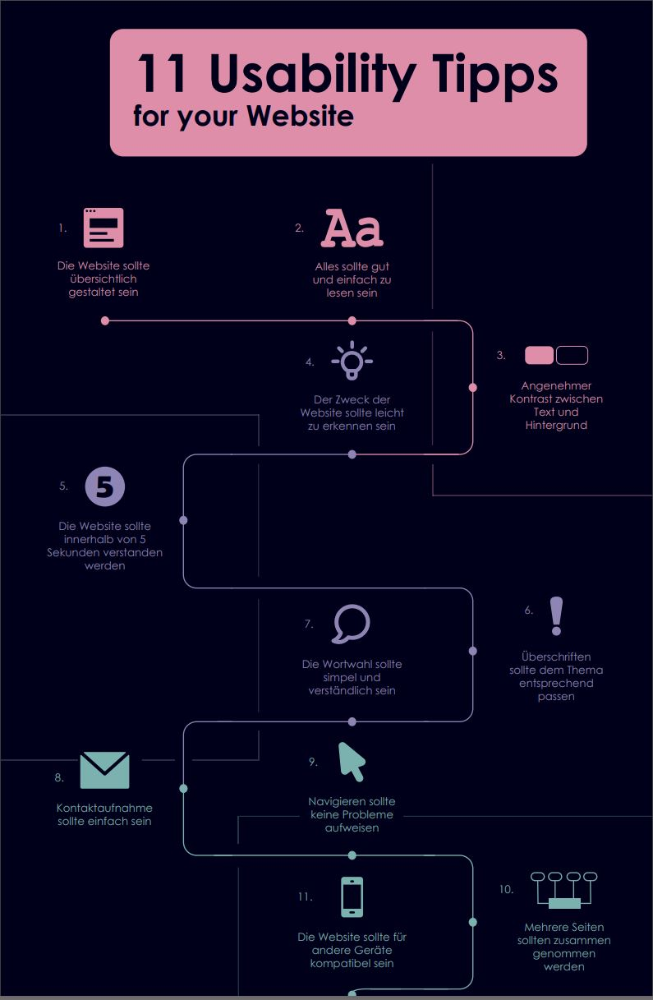

INTERVIEWS UND HILFE
Sich genauer mit dem Beruf vertraut machen
Letztes Jahr wollte ich mich schon für die Lehrstelle als Mediamatiker bewerben, jedoch hatte ich wegen eines Unfalls im Militär mit starken gesundheitlichen Problemen zu kämpfen und kam nicht um eine Operation herum. Als ich dann wusste, dass ich mich bei der Swisscom bewerben will und anfing, meine Unterlagen zusammenzustellen, war schon fast Ende November – und ich war leider zu spät dran. Immer noch fest davon überzeugt, dass es der perfekte Beruf für mich ist, stand für mich fest, dass ich es im neuen Jahr nochmal versuchen will. Um mehr über den Beruf Mediamatiker zu lernen und mich optimal auf die Lehrstelle vorzubereiten habe ich zuerst eine alte Freundin, die ich in einer Studienreise nach England im Jahr 2019 kennengelernt habe, kontaktiert. Ich habe Sie darum gebeten, mir einige Ihrer Projekte aus Ihrer Lehrstelle zuzuschicken, damit ich mir einen genaueren Eindruck vom Beruf machen kann. Zum Glück hatte sie das meiste noch gespeichert und konnte mir viele Ihrer Arbeiten vorzeigen. Ich überlegte mir anhand des Gesehenen, in welchen Bereichen ich mir noch mehr Wissen aneignen könnte, um mich besser auf die Lehrstelle vorzubereiten. Am Infotag von Swisscom stellte ich weitere Fragen darüber was alles für den Beruf benötigt wird.



Danach erarbeitete ich einen Plan für jeden Monat mit Themen, die ich anschauen und lernen will. Das grösste und schwierigste Thema war das Programmieren. Mir kam bald die Idee, eine eigene Website für die Bewerbung als Mediamatiker zu erarbeiten. Ich wendete mich an einen befreundeten Informatiker und fragte, wo ich am besten anfangen sollte. Er empfahl mir das Programm «Codeacademy» als guten Einstieg. Ich fing an, die Website zu programmieren und die Themen einzeln zu vollenden. Bald realisierte ich, wie gross mein Projekt werden würde und so suchte ich mir Hilfe bei manchen Themen. Eine Mediamatikerin unterstützte mich beim Designen der Webseite und lud mich auf ein Fotoshooting und einen Videodreh für das Bewerbungsvideo, das Sie auf der Homepage fanden, ein. Doch dank einer guten Planung und viel Hilfe wurde das Projekt erfolgreich beendet.